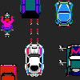

Welcome To Our 2006 Java 4K Competition Page
Game Description:
A tribute to the arcade classic Spy Hunter. The goal is simple: Drive as far as you can. Earn extra points by shooting enemies or knocking them off the road. Be careful not to cause harm to civilians!
FEATURES INCLUDE
- Based on original arcade game sprites!
- Increasing difficulty levels
- Extra life given every 10K points
- Pixel-exact collision detection
- In-Game Hi-Score
CONTROLS
- ENTER to switch gears
- LEFT and RIGHT ARROW keys to drive
- UP ARROW to accelerate
- CTRL to fire
- ESCAPE to exit
Good Luck!